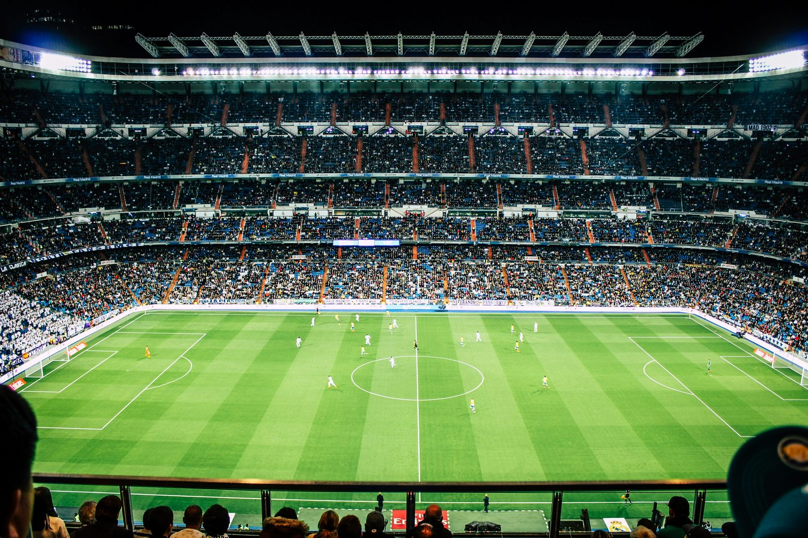

Explore the impact of Italian football on the economy and recent changes in sports policy. Learn about the Serie A clubs and the financial implications of the Decreto Crescita. Stay informed about the intersection of sports and economics in Italy.
Esplora l'impatto del calcio italiano sull'economia e le recenti modifiche alla politica sportiva. Scopri i club della Serie A e le implicazioni finanziarie del Decreto Crescita. Resta informato sull'intersezione tra sport ed economia in Italia.
Il calcio è davvero una delle industrie principali del nostro paese, con un impatto significativo sul PIL.
La recente abolizione del Decreto Crescita ha sollevato diverse domande sul sostegno politico all'industria calcistica. Questo decreto offriva agevolazioni fiscali ai giocatori stranieri che trasferivano la loro residenza in Italia, contribuendo a rendere più competitivi i club italiani nel mercato dei trasferimenti.

Tuttavia, nonostante l'importanza economica del calcio, il suo impatto sul PIL italiano è inferiore rispetto ad altri settori. Nel 2022, il calcio ha rappresentato lo 0,63% del PIL, con un valore di 11,1 miliardi di euro. Questo è un aumento positivo rispetto alla situazione pre-pandemica.
Anche se il calcio è trainante nel settore dello sport, i settori come l'agroalimentare e l'industria manifatturiera hanno un impatto economico maggiore sull'economia italiana.
Il Decreto Crescita ha avuto pro e contro per la Serie A. Ha permesso ai club di risparmiare notevolmente sulle tasse dei giocatori stranieri, ma ha anche sollevato questioni sulla competitività e sull'investimento nei giovani talenti italiani.
La mancata proroga del decreto ha creato incertezze nel mercato invernale, costringendo i club a rivedere le loro strategie di acquisto e investimento.
In termini di risparmio fiscale, i club di Serie A hanno beneficiato notevolmente dal Decreto Crescita, con risparmi stimati intorno ai 140 milioni di euro in quattro stagioni calcistiche.
Parlando del valore dell'industria calcistica in Italia, possiamo notare che il calcio ha un impatto economico significativo sul Paese. Nel 2022, secondo il Reportcalcio della FIGC, l'impatto del calcio professionistico sul PIL italiano è stato dello 0,63%, con un contributo totale di 11,1 miliardi di euro. Questo rappresenta un dato positivo poiché supera i livelli pre-pandemici e indica una ripresa del settore.
Tuttavia, se confrontiamo l'industria calcistica con altri settori dell'economia italiana, come l'agroalimentare o l'industria manifatturiera, possiamo notare che il calcio rappresenta solo una frazione dell'intero PIL nazionale. Ad esempio, l'industria manifatturiera nel 2022 ha inciso sul PIL italiano con una somma molto più elevata, pari a 290,6 miliardi di euro.
Questi confronti mettono in prospettiva l'importanza relativa del calcio all'interno dell'economia italiana. Sebbene il calcio abbia un ruolo rilevante nello sport e contribuisca all'occupazione e alle attività correlate, il suo impatto economico è limitato rispetto ad altri settori chiave.
In conclusione, il calcio italiano è un'industria vitale, ma il suo impatto economico deve essere valutato nel contesto più ampio dell'economia nazionale.
fonte: Il calcio è davvero un’industria importante per l’Italia?
Parole chiave
| Calcio | Uno sport giocato con un pallone sferico e piedi, molto popolare in Italia. |
| Industria | Attività economica che produce beni o servizi in grande quantità per il mercato. |
| PIL | Prodotto Interno Lordo, misura il valore totale di tutti i beni e servizi prodotti in un paese. |
| Impatto | Effetto o influenza che qualcosa ha su un'altra cosa. |
| Decreto | Decisione o legge emanata da un'autorità governativa. |
| Crescita | Aumento o sviluppo di qualcosa, come l'economia di un paese. |
| Stipendi | Pagamento regolare per il lavoro svolto da un dipendente. |
| Residenza | Luogo dove una persona vive legalmente. |
| Club | Organizzazione o associazione, come un club di calcio. |
| Tassazione | Processo di prelievo di imposte sul reddito o su altre attività economiche. |
| Competitività | Capacità di competere o essere efficace in un contesto commerciale. |
| Investimento | Utilizzo di denaro o risorse per ottenere un guadagno futuro. |
| Mercato | Luogo in cui vengono scambiate merci o servizi. |
| Serie A | La massima serie del campionato di calcio italiano. |
| Giocatori | Persone che praticano uno sport o un gioco. |
| Finestra | Periodo durante il quale è possibile fare acquisti o vendite specifici. |
| Benefici | Vantaggi o favori ottenuti da una determinata situazione. |
| Residenza | Il luogo in cui qualcuno vive legalmente. |
| Tasse | Contributo obbligatorio imposto dal governo sul reddito, sul consumo o su altre attività. |
Esercizio
https://wordwall.net/play/71240/519/937
Domande
- Perché il Decreto Crescita era importante per i club di Serie A?
- Qual è stato l'impatto del calcio professionistico sull'economia italiana nel 2022?
- Cosa ha causato problemi durante il mercato invernale per i club di Serie A?
- Qual è stata la risposta dell'Associazione Italiana Calciatori al mantenimento dei vantaggi fiscali per gli sportivi stranieri?
- Quanto approssimativamente hanno risparmiato i club di Serie A grazie al Decreto Crescita nel periodo considerato?